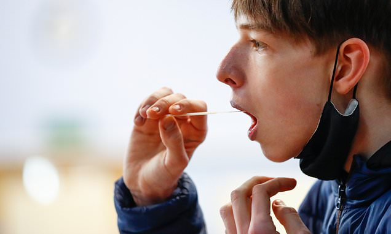
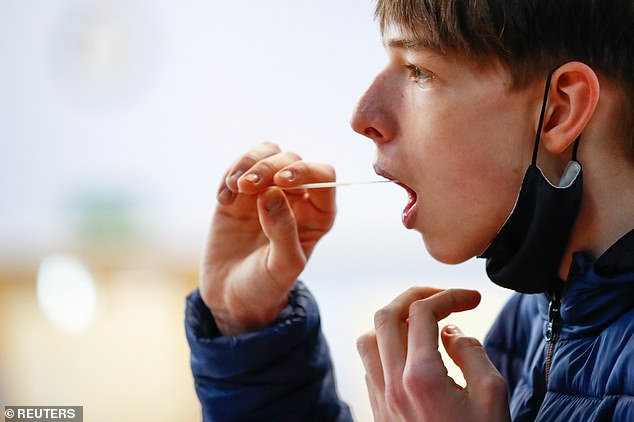

Rapid Covid tests miss 40% of asymptomatic cases and are prone to giving false positive results, major review finds as experts warn they could lead to schools having to shut
Rapid coronavirus tests may miss four in 10 asymptomatic people, a major review has concluded.
Researchers who analysed 64 studies of the effectiveness of lateral flow kits found they failed to detect 42 per cent of cases who didn't show signs of illness.
The gold-standard Cochrane review found the tests, which give results in as little as 30 minutes, were better at catching symptomatic cases (78 per cent).
The findings have caused concern among some scientists because it's thought that at least half of Covid transmission comes from patients who seem well.
Children are even less likely to fall ill with coronavirus but can still act as spreaders of the disease.
Hundreds of thousands of lateral flow tests are being used each day on teachers and pupils in a bid to keep schools open and Covid-free.They are also deployed in care homes, hospitals, and across businesses.
Professor Jon Deeks, a biostatistician at Birmingham University and co-author of the report, said ministers may have rushed lateral flow tests out in schools 'without any supporting real-world evidence'.
The review also found lateral flow tests were prone to giving false positives, when a test says someone is infected but they aren't.
Dr Ann Van den Bruel, associate professor of primary care at KU Leuven in Belgium, and an author of the review, said: 'The risk of the false positives in the screening setting is very high...
'You may end up having the opposite effect of what you want to achieve and you may have to close more workplaces, more classes...'
The review found one of the kits being used in the UK failed to meet international standards set by the World Health Organization (WHO).
Rapid lateral flow Covid tests — in use in schools across the UK — could miss more than half the cases in a population of people without symptoms, a review has concluded.Pictured: A student takes a lateral flow test at Weaverham High School in Cheshire on March 9
The studies reviewed by researchers were mostly from Europe and the US and looked at the accuracy of rapid antigen tests.
Only three of the 64 studies looked exclusively at people without symptoms.
The review found, on average, LFDs only correctly identified 58 per cent of those who were infected with Covid but did not have symptoms.
For comparison, they were accurate in identifying Covid in 78 per cent of those who had developed symptoms.
One of the poorest performing tests was made by US company Innova.That test is currently being used in Britain.
The WHO's minimum standards for testing is 80 per cent correct detection in people who have Covid.
Writing in the review, the researchers said: 'In a population of 1,000 people with symptoms where there are 50 people with Covid, we would expect that about 40 people would be correctly identified as having Covid by rapid tests, and between six and 12 cases of Covid would be missed.
'Between five and nine positive test results would turn out to be false positives.The true number of cases of Covid is likely to be lower in mass testing of people without symptoms.
'In a population of 10,000 people with no symptoms, where 50 people really had Covid, between 24 and 35 people would be correctly identified as having Covid, and between 15 and 26 cases would be missed.
'We would expect the tests to return between 125 and 213 positive results and between 90 and 189 of those positive results would be false positives.'
Dr Jac Dinnes, an epidemiologist at the University of Birmingham and author of the review, said bluntly: 'These tests do not appear to perform as well in people who don't have symptoms of Covid.'
He added: 'Our review shows that some antigen tests may be useful in healthcare settings where Covid is suspected in people with symptoms.
'These tests do not appear to perform as well in people who don't have symptoms of Covid.
'Confirming a positive result from a rapid test with a RT-PCR test, particularly where cases of Covid are low, may help avoid unnecessary quarantine.
'All antigen tests will miss some people with infection, so it is important to inform people who receive a negative test result that they may still be infected.
'There is some emerging evidence that the accuracy of the test is affected by who is doing it.'
Professor Deeks added: 'It is good to have found evidence that some test brands do meet the minimum 'acceptable' performance standards set by WHO for testing people with symptoms.
'However, they represent only a very small proportion of the commercially available tests.
'The situation is different for testing people without symptoms, particularly for the use of repeated rapid antigen tests to screen for SARS-CoV-2 infection in school pupils and staff, and hospital and care home workers.
'We didn't find any data or studies evaluating the accuracy of these tests when used in repeated screening of people with no known exposure to SARS-CoV-2.
'These testing policies have been implemented without any supporting real-world evidence.'
The full cochrane report is published online.
Lateral flow tests are only accurate at diagnosing coronavirus when administered by trained professionals, studies have repeatedly shown.
The tests, which give results in as little as 15 minutes, use swabs of the nose or throat.Samples are then mixed in a testing liquid and put into a plastic cassette which can detect the presence or absence of coronavirus and then produce an image of a line, the same way as a pregnancy test, to indicate whether it is positive or negative.
The Department of Health and NHS are instructing people to use the tests on themselves, despite manufacturers of some kits saying they shouldn't be used as DIY swabs.
Both the swabbing procedure and the use of the test cassette can easily be done wrong and affect the accuracy of the test.
If the swab isn't done for long enough, or deep enough into the nose or throat, it may not pick up fragments of virus.Medical professionals are also able to use nasopharyngeal swabs, which go right to the back of the nostril, whereas this is not advised for people who test themselves.
And if the sample isn't properly inserted into the cassette the result might be wrong, or people may misread the display when it produces a result.
SELF-TESTING CUT ACCURACY FROM 79% TO 58%
A University of Oxford and Public Health England evaluation of the Innova lateral flow test, which is being widely used in the UK, found its sensitivity - the proportion of positive cases it detected - fell from 79 per cent to 58 per cent when it was used by untrained members of the public instead of lab experts.
Based on this evaluation, officials pushed ahead and used it for a real-world self-testing trial.
PILOT IN LIVERPOOL FOUND FEWER THAN HALF OF POSITIVES
When the same Innova test was trialled on members of the public in Liverpool - with people taking their own swabs and trained military staff operating the tests - the swabs picked up just 41 per cent of positive cases.
In the study the rapid tests detected 891 positive results, compared to lab-based PCR swabs that found 2,829 positives in the same group.This means 1,938 people got a wrong negative result from the rapid test.
The study didn't compare this to professionally done rapid tests, but the manufacturer Innova claims its test is 95 per cent sensitive in lab conditions.
...BUT TESTING DONE BY MEDICS IN SLOVAKIA 'REDUCED INFECTIONS'
Despite rapid lateral flow tests getting bad press, officials in Slovakia used them on 5.2million people - almost the entire population of 5.5m - in a trial that a study later estimated to have cut the country's infection rate by 60 per cent.
The tests used were between 70 and 90 per cent accurate and all the swabs and evaluations were carried out by trained medical workers.They used deep nasopharyngeal swabs, that go to the back of the nose, whereas self-testing generally relies on a swab of only the nostril.
London School of Hygiene Tropical Medicine researchers said that the scheme successfully weeded out coronavirus cases that wouldn't have been found otherwise, slashing the number of cases by over half in a week during a lockdown.
HOW RAPID TESTS ARE DIFFERENT TO LAB-BASED PCR SWABS
Lateral flow tests are an alternative to the gold standard PCR test - known scientifically as polymerase chain reaction testing - which is more expensive and more labour-intensive but more accurate.
PCR tests also use a swab but this is then processed using high-tech laboratory equipment to analyse the genetic sequence of the sample to see if any of it matches the genes of coronavirus.
This is a much more long-winded and expensive process, involving multiple types of trained staff, and the analysis process can take hours, with the whole process from swab to someone receiving their result taking days.
It is significantly more accurate, however.In ideal conditions the tests are almost 100 per cent accurate at spotting the virus, although this may be more like 70 per cent in the real world.
Advertisement
Posted On: 2021-03-24T17:17:00
Posted By: Joe Davies For Mailonline




Content Date: 2021-03-24
Download Date: 2021-04-21
Document ID: L0C04APUU